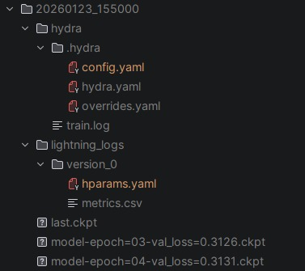
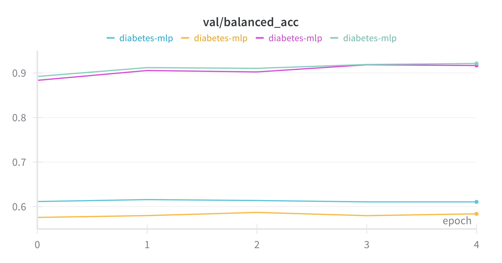
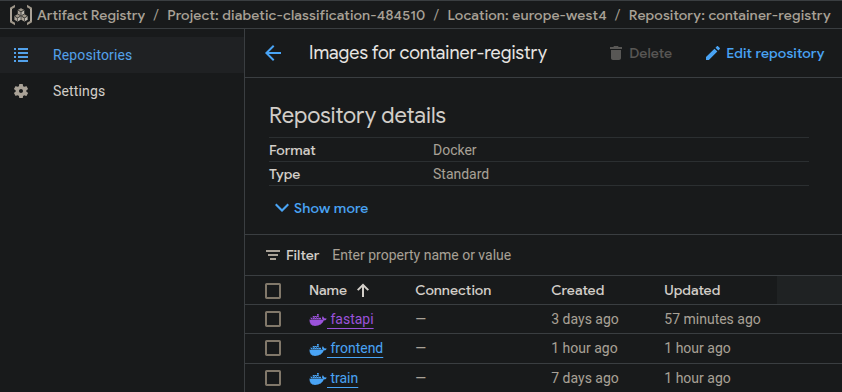
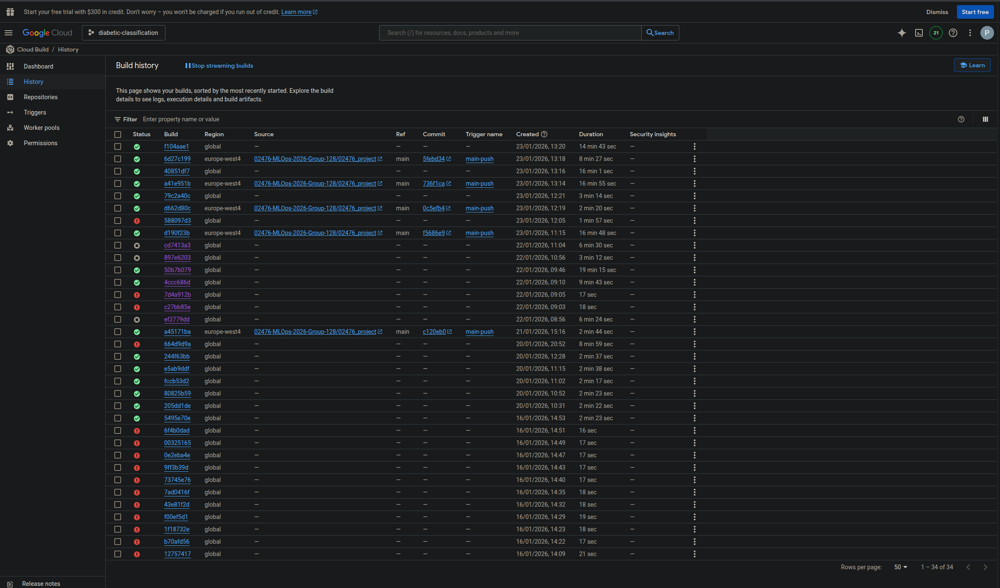
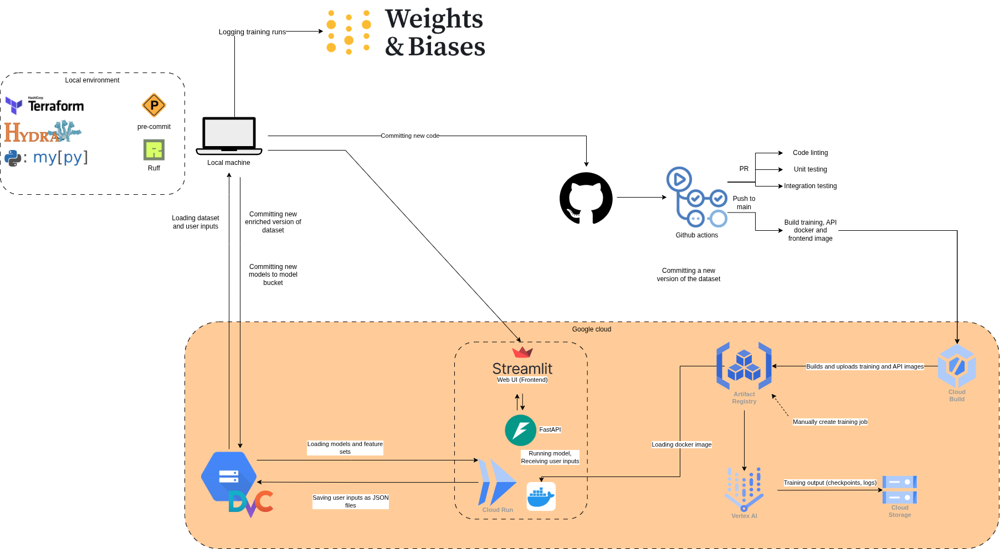

{kind=link}

Operations
This is the report template for the exam. Please only remove the text formatted as with three dashes in front and behind like:
--- question 1 fill here ---
Where you instead should add your answers. Any other changes may have unwanted consequences when your report is
auto-generated at the end of the course. For questions where you are asked to include images, start by adding the image
to the figures subfolder (please only use .png, .jpg or .jpeg) and then add the following code in your answer:

In addition to this markdown file, we also provide the report.py script that provides two utility functions:
Running:
bash
python report.py html
Will generate a .html page of your report. After the deadline for answering this template, we will auto-scrape
everything in this reports folder and then use this utility to generate a .html page that will be your serve
as your final hand-in.
Running
bash
python report.py check
Will check your answers in this template against the constraints listed for each question e.g. is your answer too short, too long, or have you included an image when asked. For both functions to work you mustn't rename anything. The script has two dependencies that can be installed with
bash
pip install typer markdown
or
bash
uv add typer markdown
The checklist is exhaustive which means that it includes everything that you could do on the project included in the curriculum in this course. Therefore, we do not expect at all that you have checked all boxes at the end of the project. The parenthesis at the end indicates what module the bullet point is related to. Please be honest in your answers, we will check the repositories and the code to verify your answers.
data.py file such that it downloads whatever data you need and preprocesses it (if necessary) (M6)model.py and a training procedure to train.py and get that running (M6)requirements.txt/requirements_dev.txt files or keeping your
pyproject.toml/uv.lock up-to-date with whatever dependencies that you are using (M2+M6)pep8) while doing the project (M7)Enter the group number you signed up on
Answer:
128
Enter the study number for each member in the group
Example:
sXXXXXX, sXXXXXX, sXXXXXX
Answer:
s214658, s251707, s252918, s243250
Did you end up using any open-source frameworks/packages not covered in the course during your project? If so which did you use and how did they help you complete the project?
Recommended answer length: 0-200 words.
Example: We used the third-party framework ... in our project. We used functionality ... and functionality ... from the package to do ... and ... in our project.
Answer:
We used Terraform to streamline the infrastructure setup for our system. Navigating the Google Cloud Console proved to be cumbersome and resource-intensive on our laptops, so we found it much more efficient to manage everything through Terraform. Additionally, having our infrastructure defined as code provided a clear and organized overview of all resources, effectively serving as both documentation and a reproducible blueprint for our setup. We also used Make to group our calls to our scripts to automate our most recurrent development tasks.
In the following section we are interested in learning more about you local development environment. This includes how you managed dependencies, the structure of your code and how you managed code quality.
Explain how you managed dependencies in your project? Explain the process a new team member would have to go through to get an exact copy of your environment.
Recommended answer length: 100-200 words
Example: We used ... for managing our dependencies. The list of dependencies was auto-generated using ... . To get a complete copy of our development environment, one would have to run the following commands
Answer:
We managed all project dependencies using uv, relying exclusively on the pyproject.toml and uv.lock files, and deliberately chose not to maintain requirements.txt files to keep dependency management streamlined. Dependencies were added and tracked using the uv add and uv add --dev commands, which ensured both production and development requirements were consistently recorded. To set up an identical development environment, a new team member would simply need to clone the repository and run uv sync, which installs all necessary packages as specified in the project files. Additionally, we used Make to organize and automate common development tasks, like running the API, tests, and training, through simple make commands. For containerized workflows, Docker is required used to ensure consistency across different systems. This approach makes onboarding straightforward and reproducible, as all environment specifications and automation scripts are version-controlled within the repository.
We expect that you initialized your project using the cookiecutter template. Explain the overall structure of your code. What did you fill out? Did you deviate from the template in some way?
Recommended answer length: 100-200 words
Example: From the cookiecutter template we have filled out the ... , ... and ... folder. We have removed the ... folder because we did not use any ... in our project. We have added an ... folder that contains ... for running our experiments.
Answer:
From the cookiecutter template we have moved the content of the src folder in a diabetic_classification folder inside of it. We have used the data.py, train.py and model.py files. We have also added a constants.py file to store some useful values. We haven't used the visualize.py file, as well as the evaluate,py file for the evaluation is taken care of in train.py.
Furthermore, we have added the .devops folder that contains scripts useful for development, it splits it 2 sub-folders: scripts which contains classic bash scripts and a python_scripts subfolder. These scripts aren't intended to be called directly, but are called by the Makefile. Because we use make to organize our scripts, we have deleted the tasks.py file that makes us of invoke.
Finally, we have added an infrastructure/ folder to hold all the Terraform-related files, as well as a data/ folder that contains the dvc files as well as the
Did you implement any rules for code quality and format? What about typing and documentation? Additionally, explain with your own words why these concepts matters in larger projects.
Recommended answer length: 100-200 words.
Example: We used ... for linting and ... for formatting. We also used ... for typing and ... for documentation. These concepts are important in larger projects because ... . For example, typing ...
Answer:
For enforcing code formatting rules we used ruff. By default, ruff rules adhere to the PEP 8 style guide. It is important to have styling rules in larger projects, because it keeps the code readable and ensures consistent style across developers. A consistent style removes noise in pull requests. Without a required style guide, developers could add or remove whitelines according to their own style. This adds unnecessary changes, making pull requests less structured.
Our custom ruff rules can be found in pyproject.toml (including the choices we have made about conflicting rules). We have overwritten the maximum line-length to 120 characters, applied rules for imports, docstrings, naming, errors and warnings (the rules these come with can be found here). For tests we have not applied the docstrings requirement, since the test name should be self-explanatory.
We have also included the static type-checker mypy to run on both the src and tests folders, which checks for type errors. Some packages conflict with mypy's missing imports checker. We have ignored checks for these, which can be seen in pyproject.toml.
Passing these rules has been made required for pull requests to main, as can be seen in .github/workflows/linting.yaml.
In the following section we are interested in how version control was used in your project during development to corporate and increase the quality of your code.
How many tests did you implement and what are they testing in your code?
Recommended answer length: 50-100 words.
Example: In total we have implemented X tests. Primarily we are testing ... and ... as these the most critical parts of our application but also ... .
Answer:
We implemented a total of 13 unit and integration tests, not including our separate Locust performance tests. The majority of these tests focus on the most critical components of our application: data processing and the inference API. For data processing, we verify that data can be fetched, is correctly normalized, and is split into training and test sets according to the configuration. For the API, our tests ensure that models are properly loaded, can perform inference as expected, and that the model registry endpoint accurately reflects the available models.
What is the total code coverage (in percentage) of your code? If your code had a code coverage of 100% (or close to), would you still trust it to be error free? Explain you reasoning.
Recommended answer length: 100-200 words.
Example: The total code coverage of code is X%, which includes all our source code. We are far from 100% coverage of our ** code and even if we were then...*
Answer:
From our unit test coverage report, the overall statement coverage is 67%. Core utility modules are fully covered (init.py: 100%, constants.py: 100%). The model and training logic have relatively strong coverage (model.py: 82%, train.py: 83%). The main gap is in data.py, which has the lowest coverage at 59%, indicating most missing tests are related to data handling and preprocessing. We are therefore not at full coverage, and even if we were close to 100%, we would not assume the code is error free. High coverage only means lines were executed by tests, not that all edge cases, assumptions, or failure modes were validated. Tests can also be shallow or miss integration issues, external dependencies, data drift, and performance problems. In practice, we still rely on code reviews, sanity checks on outputs, and careful monitoring when models are used in production. Coverage is useful, but it is only one sign of quality.
Did you workflow include using branches and pull requests? If yes, explain how. If not, explain how branches and pull request can help improve version control.
Recommended answer length: 100-200 words.
Example: We made use of both branches and PRs in our project. In our group, each member had an branch that they worked on in addition to the main branch. To merge code we ...
Answer:
Our workflow made extensive use of issues, branches, and pull requests to ensure a structured and collaborative development process. For each major task or feature, we first created a corresponding issue in GitHub. During meetings team members would then assign themselves to an issue, create a dedicated branch for their work, and implement the required changes. Once the work was ready, a pull request (PR) was opened, which automatically triggered our continuous integration (CI) workflows to run all tests and code quality checks.
To maintain code quality and encourage peer review, we enforced branch protection rules: a PR could only be merged into the main branch after it had been reviewed and approved by at least one other team member, and only if all CI passed successfully. This approach helped us catch bugs early, maintain a clean main branch, and foster collaboration and accountability within the team. By linking issues to PRs, we also ensured that all work was traceable and that progress on tasks was clearly documented throughout the project.
Did you use DVC for managing data in your project? If yes, then how did it improve your project to have version control of your data. If no, explain a case where it would be beneficial to have version control of your data.
Recommended answer length: 100-200 words.
Example: We did make use of DVC in the following way: ... . In the end it helped us in ... for controlling ... part of our pipeline
Answer:
We have used DVC to manage data versioning in the following way: the content of the data/ folder at the project root is backed up in a Data Bucket. One sub-folder, enriched/ had a more specific use: it contains a dataset in the form of a csv file that contains the initial data concatenated to the user input data.
The user inputs made via the API are first collected in the form of JSON files, which have the following naming: timestamp.json and are stored in the data bucket. Once an amount of user inputs considered sufficient is collected, the script make update-data can be run from the local environment, which downloads the enriched/diabetes_dataset.csv file as well as the user inputs, concatenates the user inputs at the end of the csv file, and uses dvc to push the dataset on the data bucket as a new version.
Discuss you continuous integration setup. What kind of continuous integration are you running (unittesting, linting, etc.)? Do you test multiple operating systems, Python version etc. Do you make use of caching? Feel free to insert a link to one of your GitHub actions workflow.
Recommended answer length: 200-300 words.
Example: We have organized our continuous integration into 3 separate files: one for doing ..., one for running ... testing and one for running ... . In particular for our ..., we used ... .An example of a triggered workflow can be seen here:
Answer:
Our continuous integration (CI) setup ensures code quality, reliability, and cross-platform compatibility. We have two main workflows: one for linting and static analysis, and another for testing and building.
The linting workflow uses Ruff (configured via pyproject.toml) to check and enforce code formatting and style. It then runs mypy on the src and tests directories to verify type annotations and catch potential type errors. This workflow is triggered on every push to a branch with a pull request (PR), ensuring only well-formatted and type-safe code is merged.
The testing workflow is also triggered on every push to a PR branch, running all unit and integration tests to catch issues early. To optimize feedback, we split the tests into two parallel jobs: unit tests (which run quickly and do not require model files or API startup) and integration tests (which validate end-to-end functionality, including model loading and API endpoints). This parallelization allows us to catch errors rapidly while still thoroughly testing the full system. Caching is used to speed up uv dependency installation. To guarantee our code works across different environments, we run unit tests on Ubuntu, Windows, and macOS using Python 3.12. This multi-platform testing helps us identify and resolve compatibility issues early.
The build workflow is only triggered when changes are merged into main. After all tests have passed and the PR is approved and merged, this workflow uses Google Cloud Build to build the docker images automatically. Integrating cloudbuild at this stage ensures that only thoroughly tested and reviewed code is built and ready to be deployed.
Examples of our triggered workflows: - PR push: - Linting: https://github.com/02476-MLOps-2026-Group-128/02476_project/actions/runs/21282615447 - Tests: https://github.com/02476-MLOps-2026-Group-128/02476_project/actions/runs/21278204599 - Main push (build): https://github.com/02476-MLOps-2026-Group-128/02476_project/actions/runs/21284357876
In the following section we are interested in learning more about the experimental setup for running your code and especially the reproducibility of your experiments.
How did you configure experiments? Did you make use of config files? Explain with coding examples of how you would run a experiment.
Recommended answer length: 50-100 words.
Example: We used a simple argparser, that worked in the following way: Python my_script.py --lr 1e-3 --batch_size 25
Answer:
For running training experiments we set up Hydra. The hydra config files can be found at configs/hydra. These config values are passed to the train method as a dictionary. The Hydra logs are stored in the same directory as the model output, in a /hydra subfolder.
It is possible to change these config values either in the .yaml files itself, or overwrite them from the CLI, for example:
bash
uv run src/diabetic_classification/train.py optimizer.lr=0.001
We have also performed a hyperparameter sweep using hydra's multi-run functionality. The exact command used and the results can be found in README.md.
Reproducibility of experiments are important. Related to the last question, how did you secure that no information is lost when running experiments and that your experiments are reproducible?
Recommended answer length: 100-200 words.
Example: We made use of config files. Whenever an experiment is run the following happens: ... . To reproduce an experiment one would have to do ...
Answer:
We made use of hydra config files. Whenever an experiment is run the following happens: hydra reads the config file, and passes the provided values as a dictionary to the train script. The training script doesn't take any other parameters, and fills any parameter needed from the hydra config. We have defined hydra's output in configs/hydra/config.yaml, which outputs to the same directory as where the model is outputted, keeping configuration and result together.
An overview of the output after train.py has run:

To reproduce an experiment, take the config.yaml file which was used for the model, and either change the path inside @hydra.main(...), or update the parameters of the currently used config files to be equal to the experiment to be reproduced.
Upload 1 to 3 screenshots that show the experiments that you have done in W&B (or another experiment tracking service of your choice). This may include loss graphs, logged images, hyperparameter sweeps etc. You can take inspiration from this figure. Explain what metrics you are tracking and why they are important.
Recommended answer length: 200-300 words + 1 to 3 screenshots.
Example: As seen in the first image when have tracked ... and ... which both inform us about ... in our experiments. As seen in the second image we are also tracking ... and ...
Answer:

As seen in the first image, we tracked val/balanced_acc across epochs for several runs of the diabetes-mlp model. Balanced accuracy averages sensitivity and specificity, so it provides an unbiased view when class distributions are skewed, which is the case in our dataset. The initial runs (blue and yellow) were trained without any class-imbalance handling and therefore leaned toward predicting the majority class. This leads to deceptively stable but low balanced accuracy scores around 0.58–0.62. After applying class-imbalance correction through positive class weights, later runs (pink and green) achieve substantially higher balanced accuracy, reaching around 0.90–0.91. These improvements indicate that the model learned to correctly identify minority-class samples rather than inflating performance by favouring the majority class.
As seen in the second image, we also tracked val/loss, the validation loss we optimize during training. Lower validation loss generally indicates better fit to the validation data and more reliable probability estimates. Unlike accuracy-based metrics, loss incorporates the confidence of predictions, which allows it to reveal situations where the model may be overconfident or poorly calibrated. For example, a model can achieve high accuracy while still assigning extreme probabilities to wrong predictions, resulting in higher loss. By comparing the loss curves with balanced accuracy, we can verify whether performance gains reflect improvements in minority-class detection or whether they stem from artifacts such as majority-class bias or overfitting.
Docker is an important tool for creating containerized applications. Explain how you used docker in your experiments/project? Include how you would run your docker images and include a link to one of your docker files.
Recommended answer length: 100-200 words.
Example: For our project we developed several images: one for training, inference and deployment. For example to run the training docker image:
docker run trainer:latest lr=1e-3 batch_size=64. Link to docker file:Answer:
We used Docker to containerize both our training pipeline and inference API, ensuring reproducibility and environment consistency across local development and cloud deployments. By containerizing the training pipeline, we can easily launch multiple training runs with different hyperparameters in parallel, isolated from the host system and each other. The inference API is also containerized, which makes deploying to Google Cloud Run or running locally seamless, as the same image can be used in both environments.
To run a training job with custom hyperparameters, you can override configuration values directly from the command line. For example:
docker run --rm -v $(pwd)/models:/app/models train:latest trainer.batch_size=128 trainer.max_epochs=10 model.hidden_dim=64
This command mounts a local models directory to the container for output, and overrides the batch size, number of epochs, and model hidden dimension. This flexibility allows for rapid experimentation and easy scaling.
Link to Dockerfile: https://github.com/02476-MLOps-2026-Group-128/02476_project/blob/main/dockerfiles/train.dockerfile
When running into bugs while trying to run your experiments, how did you perform debugging? Additionally, did you try to profile your code or do you think it is already perfect?
Recommended answer length: 100-200 words.
Example: Debugging method was dependent on group member. Some just used ... and others used ... . We did a single profiling run of our main code at some point that showed ...
Answer:
To perform debugging, we mainly relied on our unit and integration tests set up with PyTest. This allowed us to use the built-in debugger and set breakpoints to inspect variable initializations and trace errors. We also used wandb logging to track down issues during model training and loguru API development, especially when working with data preprocessing or configuration files. Code reviews and pair programming were helpful for catching subtle bugs and improving code quality as a team.
Regarding profiling, our model and training pipeline were simple and fast enough that we did not feel the need to perform extensive profiling or optimization. However, we did make a conscious effort to optimize data loading by using the pyarrow library, which significantly sped up reading large CSV files for training. This improvement reduced data loading bottlenecks and made our experiments more efficient.
In the following section we would like to know more about your experience when developing in the cloud.
List all the GCP services that you made use of in your project and shortly explain what each service does?
Recommended answer length: 50-200 words.
Example: We used the following two services: Engine and Bucket. Engine is used for... and Bucket is used for...
Answer:
We used: - Cloud build for building images as described in the question X about our CI pipeline - Buckets to store data, models and configuration like feature sets - Artifact registry for docker images - Cloud Run for deploying the inference api and frontend - Vertex AI for training our models - IAM for creating service accounts for the github workflows, the api and the frontend
The backbone of GCP is the Compute engine. Explained how you made use of this service and what type of VMs you used?
Recommended answer length: 100-200 words.
Example: We used the compute engine to run our ... . We used instances with the following hardware: ... and we started the using a custom container: ...
Answer:
We didn't make use of compute engine directly, since we used Vertex AI for model training. Also, we had GPUs available to ourselves to run accelerated training, and as we are deploying our applications with cloud run, there is no need for VM.
Insert 1-2 images of your GCP bucket, such that we can see what data you have stored in it. You can take inspiration from this figure.
Answer:
Here is a figure showing the content of our data bucket:

Upload 1-2 images of your GCP artifact registry, such that we can see the different docker images that you have stored. You can take inspiration from this figure.
Answer:
Here is a screenshot of our artifact registry:

Upload 1-2 images of your GCP cloud build history, so we can see the history of the images that have been build in your project. You can take inspiration from this figure.
Answer:
Here is a screenshot of our GCP cloud build history: 
Did you manage to train your model in the cloud using either the Engine or Vertex AI? If yes, explain how you did it. If not, describe why.
Recommended answer length: 100-200 words.
Example: We managed to train our model in the cloud using the Engine. We did this by ... . The reason we choose the Engine was because ...
Answer:
We managed to train our model in the cloud using Vertex AI. We decided to go with Vertex AI since it is designed for training models, and we don't have to manually turn the VM on and off, saving credits.
To trigger a training job in the cloud, the following command should be run:
bash
gcloud ai custom-jobs create --region=europe-west4 --display-name=train --config=configs/config_gpu.yaml
This command uses the configuration file configs/config_gpu.yaml, which specifies where to find the docker image, the machine type to use (which we have configured to use a GPU), the output directory, and the Weights & Biases API key for logging. Our GCP project has access to a GPU, so in config_gpu.yaml we specify that we want to use a GPU for training: NVIDIA_TESLA_T4. The docker image specified inside config_gpu.yaml is the one which is automatically generated after each push to main, as shown in Q11.
The status of the training job can be monitored in the GCP console: here.
Did you manage to write an API for your model? If yes, explain how you did it and if you did anything special. If not, explain how you would do it.
Recommended answer length: 100-200 words.
Example: We did manage to write an API for our model. We used FastAPI to do this. We did this by ... . We also added ... to the API to make it more ...
Answer:
We developed a FastAPI to serve our trained models. On startup, the API automatically pulls the latest model weights, configuration files, and available feature sets from our model bucket, building a dynamic model registry in memory (or on GPU if available). This enables the API to serve multiple models and feature sets flexibly.
The API exposes several endpoints:
- GET /: Health check and overview of available endpoints.
- GET /models: Returns a JSON structure describing the model registry, allowing clients to discover available models and feature sets.
- POST /predict/{problem_type}/{model_type}/{feature_set}/: Accepts a feature map, converts it to a tensor, and returns predictions from the selected model. The path parameters specify which model and feature set to use.
- GET /reports: Generates and returns a data analysis report (see Q26).
- GET /feature-sets: Lists all available feature sets.
- GET /metrics: Exposes Prometheus metrics for monitoring.
Did you manage to deploy your API, either in locally or cloud? If not, describe why. If yes, describe how and preferably how you invoke your deployed service?
Recommended answer length: 100-200 words.
Example: For deployment we wrapped our model into application using ... . We first tried locally serving the model, which worked. Afterwards we deployed it in the cloud, using ... . To invoke the service an user would call
curl -X POST -F "file=@file.json"<weburl>Answer:
We deployed our FastAPI application both locally and in the cloud. Initially, we built and tested the Docker image locally to ensure the API served models correctly. Once validated, we set up CI/CD pipelines using GitHub Actions and Google Cloud Build, so that every push to the main branch automatically builds and publishes a new API image to our Docker registry.
For cloud deployment, we used Terraform to automate the provisioning of Google Cloud Run, making the API publicly accessible at: https://diabetic-fastapi-1012271147761.europe-west4.run.app. This setup ensures that the latest version of the API is always available and can be rolled back or redeployed easily.
To invoke the deployed service for inference, a user can run:
sh
curl -X POST \
-H "Content-Type: application/json" \
--data @sample.json \
"https://diabetic-fastapi-1012271147761.europe-west4.run.app/predict/diagnosed_diabetes/MLP/feature_set1/"
where sample.json contains the required feature mappings. The expected input schema can be found at: https://diabetic-fastapi-1012271147761.europe-west4.run.app/feature-sets/
Did you perform any functional testing and load testing of your API? If yes, explain how you did it and what results for the load testing did you get. If not, explain how you would do it.
Recommended answer length: 100-200 words.
Example: For functional testing we used pytest with httpx to test our API endpoints and ensure they returned the correct responses. For load testing we used locust with 100 concurrent users. The results of the load testing showed that our API could handle approximately 500 requests per second before the service crashed.
Answer:
We performed both functional and load testing of our API. For functional testing, we wrote integration tests using pytest and httpx to verify that all API endpoints worked as expected. These tests ensured that models and feature sets were loaded correctly and that the inference endpoint returned valid predictions for a variety of input cases.
For load testing, we used Locust to simulate 100 concurrent users making requests to the deployed API on Google Cloud Run. The service maintained a 99th percentile response time of 78 ms overall, with the slowest endpoint (inference) reaching 82 ms at the 99th percentile. These results demonstrate that our API can handle significant load while maintaining a fast and responsive user experience.
Did you manage to implement monitoring of your deployed model? If yes, explain how it works. If not, explain how monitoring would help the longevity of your application.
Recommended answer length: 100-200 words.
Example: We did not manage to implement monitoring. We would like to have monitoring implemented such that over time we could measure ... and ... that would inform us about this ... behaviour of our application.
Answer:
We implemented monitoring in two main ways. First, we integrated Prometheus into our FastAPI application to track key operational metrics such as the number of requests, inference latency, and error counts. These metrics provide valuable insights into the health and performance of the API, and can be used to detect bottlenecks, monitor usage patterns, and inform decisions about scaling the deployment. While we did not manage to set up a full cloud monitoring pipeline to visualize or alert on these metrics, the Prometheus integration lays the groundwork for future observability improvements.
Second, we implemented data drift monitoring by adding a /reports endpoint to the API. This endpoint generates reports using EvidentlyAI, comparing the distribution of incoming user data to the original training data. We use the DataDriftPreset, TargetDriftPreset, and DataQualityPreset templates to detect shifts in data distributions, target variable drift, and overall data quality issues. This helps us identify when the model may need retraining or when the input data has changed significantly, which is critical for maintaining reliable predictions in production.
In the following section we would like you to think about the general structure of your project.
How many credits did you end up using during the project and what service was most expensive? In general what do you think about working in the cloud?
Recommended answer length: 100-200 words.
Example: Group member 1 used ..., Group member 2 used ..., in total ... credits was spend during development. The service costing the most was ... due to ... . Working in the cloud was ...
Answer:
We started with $50.0 in credits, and as of writing this report, we are at $47.91, so we have only spent $2.09 in credits. We consider this cheap, given the fact that we used GCP for various tasks such as docker image building, image storage, data (CSV) storage, API + frontend hosting and training the model with Vertex AI. However, it should also be admitted that during this project we have not spent as much time on optimizing and training our model as would be typical for a deployed ML application. Running training on larger models, with more epochs would definitely have had a larger impact on our credit usage.
Working in the cloud was a valuable experience, teaching us that it is very accessible and not expensive (on the scale of our projects). The cloud enables you to try many configurations and experiments, without worying about not having the adequate resources.
A breakdown of our costs: Here is a screenshot of our GCP cloud build history:

Did you implement anything extra in your project that is not covered by other questions? Maybe you implemented a frontend for your API, use extra version control features, a drift detection service, a kubernetes cluster etc. If yes, explain what you did and why.
Recommended answer length: 0-200 words.
Example: We implemented a frontend for our API. We did this because we wanted to show the user ... . The frontend was implemented using ...
Answer:
We used Streamlit to make a frontend that provides a structured form for diabetes prediction. It loads the active feature set from configs/feature_sets/feature_set1.json, numeric normalization stats from data/processed/standardization_params.csv, and categorical defaults from the processed training CSV. Users fill tabs for demographics, lifestyle, vitals, labs, and socioeconomic data; unknowns default to averages. Inputs are optionally normalized, encoded into the expected feature order, and sent to the FastAPI endpoint. The response is rendered with probability chips, progress bar, and color-themed result card. A sidebar lets users set the backend URL and toggle normalization, making local and cloud deployments interchangeable without code changes.
Include a figure that describes the overall architecture of your system and what services that you make use of. You can take inspiration from this figure. Additionally, in your own words, explain the overall steps in figure.
Recommended answer length: 200-400 words
Example:
The starting point of the diagram is our local setup, where we integrated ... and ... and ... into our code. Whenever we commit code and push to GitHub, it auto triggers ... and ... . From there the diagram shows ...
Answer:

We start on a local machine where the codebase is developed and validated before any push. We use pre-commit hooks to run Ruff for linting/formatting and mypy for type checking, so issues are caught early. Hydra manages configuration for experiments (model settings, data paths, training parameters). Terraform parametrizes which cloud resources we use as code. During training runs we log metrics and artifacts to Weights & Biases. For data versioning we rely on DVC. The dataset files are tracked with DVC and stored in a remote bucket on Google Cloud. When we enrich the dataset (with user inputs for instance), we commit the updated DVC pointers together with the code, which keeps code, data, and models aligned. When code is pushed to GitHub, GitHub Actions runs our CI pipeline. On pull requests it executes code quality checks and unit/integration tests. When changes are merged to main, the pipeline builds Docker images for the training service, API, and frontend. Cloud Build uploads these images to Google Artifact Registry. For serving, Streamlit provides the web UI and FastAPI provides the backend API. Both run as containers on Cloud Run. The API loads the latest approved model and required feature information from the DVC-managed storage, runs inference, and returns predictions. User inputs are temporarily stored as JSON and converted to CSV by a manual script so we can audit requests and reuse them for monitoring or retraining. For retraining, we trigger a Vertex AI training job using the training image from Artifact Registry. Outputs (checkpoints, logs) go to Cloud Storage, and metrics are tracked in Weights & Biases. After validation, the new model is added to DVC and becomes available to the deployed service. This closes the loop between usage and future model improvements.
Discuss the overall struggles of the project. Where did you spend most time and what did you do to overcome these challenges?
Recommended answer length: 200-400 words.
Example: The biggest challenges in the project was using ... tool to do ... . The reason for this was ...
Answer:
One of the challenges in the project was understanding our data, which cost us significant time at the start of the project. The dataset we used contained more target features than we though. For example, not just diagnosed_diabetes was the target, but also diabetes_stage_type_1 and diabetes_stage_type_2. Features such as glucose_fasting and hba1c were not the direct target features, but they were very strong indicators. Including these features inside our training lead to unrealistic test accuries, as high as 99%.
Achieving a reasonable model performance when the dataset was properly understood was a challenge at first. We first use a tabular CNN model, but later moved to an MLP model. After choosing the right size for the model and setting an appropriate number of epochs, we managed to consistently train models with accuracies between 81%-81%.
It was a bit of struggle when starting to use Vertex AI to also save the Hydra output. It is relatively easy to define where to output the model directory inside the train script. However, hydra's output is defined in the config file. Eventually, we have solved this by setting the output directory as an environment file in the config_gpu.yaml file:
baseOutputDirectory:
outputUriPrefix: gs://vertex-ai-outputs-diabetes
However, this config file did not accept the output URI to start with gcs (which we use for model output), so we have applied a workaround by checking the environment variable:
model_dir_env.replace("gs://", "/gcs/")
State the individual contributions of each team member. This is required information from DTU, because we need to make sure all members contributed actively to the project. Additionally, state if/how you have used generative AI tools in your project.
Recommended answer length: 50-300 words.
Example: Student sXXXXXX was in charge of developing of setting up the initial cookie cutter project and developing of the docker containers for training our applications. Student sXXXXXX was in charge of training our models in the cloud and deploying them afterwards. All members contributed to code by... We have used ChatGPT to help debug our code. Additionally, we used GitHub Copilot to help write some of our code. Answer:
Student s243250 was in charge of setting up the data versioning and managing the enrichment of the dataset with the additional user inputs. Furthermore, he set up a first script to train a model in a docker container, and wrote a function that wasn't used in the final project to convert checkpoint files from the training of the model to the onnx format.
Student s251707 set up ruff code style checking for the project, implemented the use of Hydra for experiment configuration, created a trigger workflow for automatically building docker images in the cloud, set up model training in GCP using Vertex AI, added a reports endpoint for data drift analysis. I used generative AI for pull request summaries and helping with bugs.
Student s252918 trained the model and implemented the command-lina interface together with tests for the model and training mudules, Weights & Biases experiment tracking, and created the frontend for the API. Also attempted to set up cloud monitoring, but in the end we used the monitoring code from student s214658. I used generative AI for helping with code understanding, bugs, and github summaries.
Student s214658 led the development of the data processing pipeline, set up GitHub Actions for CI/CD, and managed the deployment of services using Terraform. I implemented the FastAPI inference backend, wrote integration, unit, and performance tests, and configured pre-commit hooks to enforce code quality. Throughout the project, I collaborated closely with the team to ensure smooth integration of all components and reliable cloud deployment.
But overall most of the tasks have been shared between members of the group.
{kind=link}
{kind=link}
{kind=link}
{kind=link}